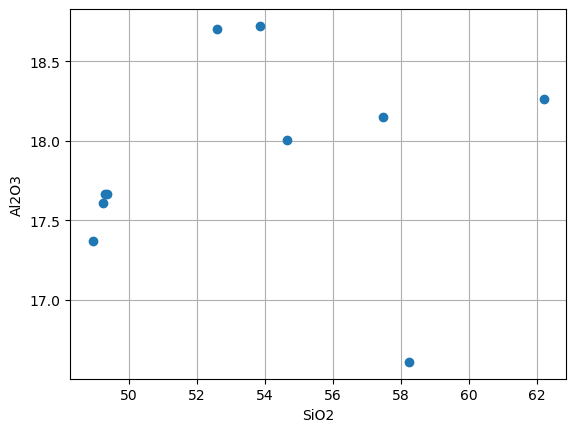
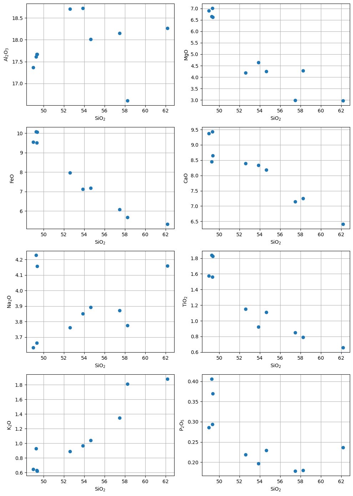

Develidağ Harker#
import numpy as np
import matplotlib.pyplot as plt
import pandas as pd
dataset = pd.read_excel("../D2004_1.xlsx", index_col=0)
dataset
| D2004-1 | D2004-3 | D2004-4 | D2004-5 | D2004-7 | D2004-8 | D2004-10 | D2004-11 | D2004-12 | D2004-13 | |
|---|---|---|---|---|---|---|---|---|---|---|
| Sample | ||||||||||
| SiO2 | 49.238260 | 49.355305 | 57.460235 | 58.243515 | 54.643325 | 53.857485 | 49.320515 | 48.952205 | 52.588875 | 62.194910 |
| Al2O3 | 17.606810 | 17.666350 | 18.151605 | 16.608890 | 18.007920 | 18.722330 | 17.667810 | 17.366470 | 18.702185 | 18.262675 |
| MgO | 6.647450 | 6.618915 | 2.986475 | 4.284185 | 4.251215 | 4.645285 | 7.010660 | 6.905865 | 4.190585 | 2.978945 |
| CaO | 8.449850 | 8.655225 | 7.148295 | 7.247435 | 8.187490 | 8.331065 | 9.428440 | 9.369540 | 8.395715 | 6.412465 |
| MnO | 0.168430 | 0.168340 | 0.102165 | 0.097385 | 0.129850 | 0.127700 | 0.160130 | 0.165290 | 0.137555 | 0.103160 |
| TiO2 | 1.836800 | 1.827275 | 0.848285 | 0.791010 | 1.109160 | 0.923840 | 1.560665 | 1.572575 | 1.151945 | 0.657485 |
| Fe2O3 | 11.191540 | 11.170610 | 6.768045 | 6.321155 | 7.972725 | 7.919345 | 10.569860 | 10.610675 | 8.865080 | 5.927425 |
| FeO | 9.326283 | 9.308842 | 5.640038 | 5.267629 | 6.643937 | 6.599454 | 8.808217 | 8.842229 | 7.387567 | 4.939521 |
| FeO | 10.070148 | 10.051315 | 6.089887 | 5.687775 | 7.173858 | 7.125827 | 9.510760 | 9.547485 | 7.976799 | 5.333497 |
| Na2O | 4.227495 | 4.157800 | 3.872390 | 3.775650 | 3.892695 | 3.852035 | 3.661620 | 3.631950 | 3.761820 | 4.160025 |
| K2O | 0.928125 | 0.619185 | 1.348155 | 1.810630 | 1.041610 | 0.965350 | 0.632260 | 0.645220 | 0.889630 | 1.880045 |
| P2O5 | 0.406122 | 0.369426 | 0.177736 | 0.180168 | 0.229693 | 0.196276 | 0.293889 | 0.285689 | 0.218384 | 0.236632 |
| Sr | 429.299430 | 436.034375 | 502.537480 | 464.153935 | 475.165275 | 528.315450 | 457.552995 | 449.272925 | 531.391835 | 465.702285 |
| Ba | 171.641825 | 310.219665 | 573.846105 | 982.053220 | 432.950750 | 489.987550 | 363.640420 | 186.998305 | 1594.853350 | 542.596235 |
| Total | 100.270183 | 100.150065 | 98.652408 | 99.111707 | 99.201015 | 99.395493 | 100.048730 | 99.246983 | 98.714645 | 102.504720 |
| Na2O+K2O | 5.155620 | 4.776985 | 5.220545 | 5.586280 | 4.934305 | 4.817385 | 4.293880 | 4.277170 | 4.651450 | 6.040070 |
SiO2 = dataset.loc["SiO2"]
SiO2
D2004-1 49.238260
D2004-3 49.355305
D2004-4 57.460235
D2004-5 58.243515
D2004-7 54.643325
D2004-8 53.857485
D2004-10 49.320515
D2004-11 48.952205
D2004-12 52.588875
D2004-13 62.194910
Name: SiO2, dtype: float64
SiO2 = dataset.loc["SiO2"]
Al2O3 = dataset.loc["Al2O3"]
Na2O = dataset.loc["Na2O"]
K2O = dataset.loc["K2O"]
MgO = dataset.loc["MgO"]
CaO = dataset.loc["CaO"]
TiO2 = dataset.loc["TiO2"]
P2O5 = dataset.loc["P2O5 "]
FeO = dataset.iloc[8]
plt.plot(SiO2, Al2O3, "o")
plt.grid()
plt.ylabel('Al2O3'), plt.xlabel('SiO2')
plt.show()

fig, axes = plt.subplots(4, 2, figsize=(10, 14))
# Al2O3
axes[0, 0].plot(SiO2, Al2O3, "o")
axes[0, 0].grid()
axes[0, 0].set_xlabel(r"SiO$_2$")
axes[0, 0].set_ylabel(r"Al$_2$O$_3$")
# MgO
axes[0, 1].plot(SiO2, MgO, "o")
axes[0, 1].grid()
axes[0, 1].set_xlabel(r"SiO$_2$")
axes[0, 1].set_ylabel(r"MgO")
# FeO
axes[1, 0].plot(SiO2, FeO, "o")
axes[1, 0].grid()
axes[1, 0].set_xlabel(r"SiO$_2$")
axes[1, 0].set_ylabel(r"FeO")
# CaO
axes[1, 1].plot(SiO2, CaO, "o")
axes[1, 1].grid()
axes[1, 1].set_xlabel(r"SiO$_2$")
axes[1, 1].set_ylabel(r"CaO")
# Na2O
axes[2, 0].plot(SiO2, Na2O, "o")
axes[2, 0].grid()
axes[2, 0].set_xlabel(r"SiO$_2$")
axes[2, 0].set_ylabel(r"Na$_2$O")
# TiO2
axes[2, 1].plot(SiO2, TiO2, "o")
axes[2, 1].grid()
axes[2, 1].set_xlabel(r"SiO$_2$")
axes[2, 1].set_ylabel(r"TiO$_2$")
# K2O
axes[3, 0].plot(SiO2, K2O, "o")
axes[3, 0].grid()
axes[3, 0].set_xlabel(r"SiO$_2$")
axes[3, 0].set_ylabel(r"K$_2$O")
# P2O5
axes[3, 1].plot(SiO2, P2O5, "o")
axes[3, 1].grid()
axes[3, 1].set_xlabel(r"SiO$_2$")
axes[3, 1].set_ylabel(r"P$_2$O$_5$")
# Adjust layout and show the plot
plt.tight_layout()
plt.show()
